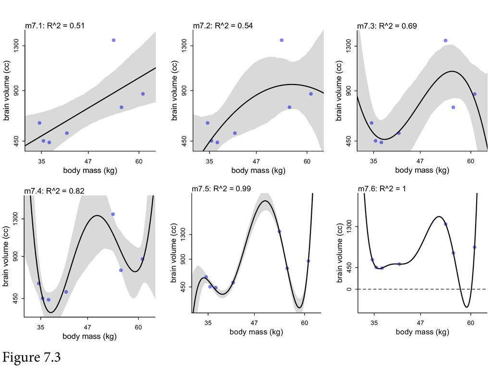

Ulysses' compass
Monday December 21, 2020
These are some slides for a book club discussion of Chapter 7 from McElreath's Statistical Rethinking. See also McElreath's own slides and video presentations.
🐉 Scylla of overfitting
⛵ Ulysses' compass 🧭
🌪 Charybdis of underfittingThe title of the chapter is "Ulysses' Compass." McElreath loves to give his chapters cute names that don't necessarily mean anything to you until you've read the chapter.
What do we value: simplicity or accuracy? The chapter is about navigating between overfitting and underfitting, which McElreath notes briefly (page 201) is related to but distinct from the bias variance trade-off. I think the difference he's alluding to is about what a model is capable of representing (bias/variance) vs. what it does represent (under/overfitting).

In section 7.1, "The problem with parameters" is that too many can make it easy to overfit. It's a fairly standard presentation of overfitting via polynomial regression and hating on R2 (or any naive score on the training data).
from math import log
# Truth (as in Problem 7E1)
p = [0.7, 0.3] # heads, tailsSo now it's time to do information theory. Here we go!
This section was the most interesting to me, so I'm going to spend some time on it here. I felt like his explanations were helpful, and I've encountered the material in less cogent ways previously, so I appreciated the chance to think things through all together a bit.
I'll do a running example where the true probabilities of heads and tails for a coin (say) are 0.7 and 0.3. (We never really know the true probabilities.)
# Entropy, H(p)
H = lambda p: -sum(p_i * log(p_i) for p_i in p)
H(p) # 0.6108643020548935So we get entropy, which measures how uncertain things are. (He gives some motivating criteria and implies it could be derived.)
# Candidate "models"
q = [0.5, 0.5]
r = [0.9, 0.1]So say we have these two "models" for that coin.
(These are just point estimates, not whole posterior distributions.)
# Cross-Entropy, H(p, q), xH here because Python
xH = lambda p, q: -sum(p_i * log(q_i) for p_i, q_i in zip(p, q))
xH(p, q) # 0.6931471805599453
xH(p, r) # 0.764527888858692Cross-entropy tells us something about how well a model goes with the truth. (Well; how un-well: lower scores are better.)
The best score is what you get using the true model, which is the entropy of the true model.
In lots of my models, we use cross-entropy loss, and we generally just implicitly round all the "true" probabilities to one or zero, or do something nearly as unjustified.
# KL Divergence, D(p, q)
D = lambda p, q: sum(p_i * log(p_i/q_i) for p_i, q_i in zip(p, q))
D(p, q) # 0.08228287850505178
D(p, r) # 0.15366358680379852Divergence then is just cross-entropy with the entropy subtracted off, so that the best you can do is zero.
# D(p, q) = H(p, q) - H(p)
D(p, q) == xH(p, q) - H(p) # TrueThe other one doesn't happen to come out exactly due to floating point math; what luck that the first one does!
So we wish we could use divergence to evaluate models, but we can't
because we never really know the true underlying model p. All we get
are data.
(If instead we're assuming that all the data is really 100% likely, then H(p) is 0 and there's nothing to subtract off.)
The key insight in general is that even if we don't know p, when we
compare two models' scores by subtracting them, the p goes away, so
we can still get relative scores even without p.
# Data
d = [0, 0, 1] # heads, heads, tailsSo here are some data.
# Log probability (likelihood) score
S = lambda d, p: sum(log(p[d_i]) for d_i in d)
S(d, q) # -2.0794415416798357
S(d, r) # -2.513306124309698So we switch now to just using the sum of log likelihoods of the data given the model as the model's score.
This score is the same as the "cross-entropy" I often use, which is the same also as divergence, when we're saying all the true probabilities are zero or one.
Higher scores are better here.
Positive log likelihoods happen!
Positive log likelihoods caused me a little bit of consternation, because I'd been thinking in terms of probabilities rather than probability distributions. But really when you have a distribution, you're using a density, which can be greater than one. So the log could be positive.
# True vs. predictive
S(d, p) # -1.917322692203401
S(d, [2/3, 1/3])
# -1.9095425048844388The true model isn't necessarily the one that scores best on a given sample of data.
# Deviance
deviance = lambda d, p: -2 * S(d, p)
S(d, p) # -1.917322692203401
deviance(d, p) # 3.834645384406802Then it's also common to switch to deviance, to make something nice happen with chi-squared distributions or something. Now smaller scores are better.
Regularization!
From the information theory stuff, he really wants to develop information criteria, but first he talks about regularization.
He points out that it's sort of about pulling out the "regular" patterns in the data, rather than overfitting to chance patterns. Nice little mnemonic.
Bayesians are pretty smug about regularization, because they get it essentially for free by adjusting their priors.
The chapter also has some material on robust regression, which Bayesian's are also pretty smug about because it's relatively easy for them to just swap out the normal distribution for something with fatter tails.
Next it's on to "Predicting predictive accuracy." McElreath talks a little bit about cross-validation, but it's pretty clear his true love is information criteria.
I generally prefer (read: "actually use") cross-validation.
- AIC: Akaike Information Criterion
- BIC: Bayesian Information Criterion (aka Schwarz criterion)
- CV: Cross-Validation
- DIC: Deviance Information Criterion
- lppd: Log Pointwise Predictive Density
- PSIS: Pareto-smoothed importance sampling cross-validation
- R^2: "variance explained" or "coefficient of determination"
- WAIC: [Widely Applicable | Watanabe-Akaike] Information Criterion
So he talks about his favorites, PSIS and WAIC. They seem fine.
compare but don't select
Then he says not to do model selection, in the sense of throwing out models and what you learned from them in the process.
# Mine (Python)
def sum_log_prob(a, b):
return max(a, b) + math.log1p(math.exp(0 - abs(a - b)))
# McElreath's (R)
log_sum_exp <- function( x ) {
xmax <- max(x)
xsum <- sum( exp( x - xmax ) )
xmax + log(xsum)
}Little sidebar (as also McElreath had one): Multiplying probabilities that you have the logs of is easy, because you just add the logs. Adding log probabilities is more annoying. But you can be a little clever about it and it works out! I needed this recently while playing with the St. Petersburg paradox.
Mine is based on a post from Kevin Karplus. I found McElreath's on a post on rdrr.
Ulysses' compass
- Don't overfit
- Use log likelihood
- Use CV and/or IC
So that about wraps it up!
See also my notes and quotes from the chapter.